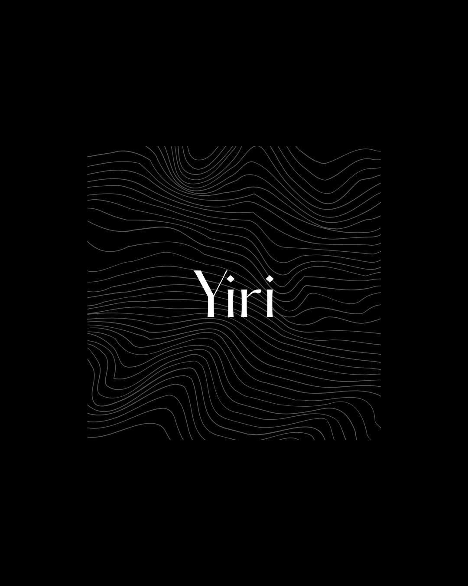

Yiri Media Lab
Sobre YML
Yiri es la palabra para árbol en la lengua bamana de África occidental. El árbol ha sido un espacio de contemplación, de reposo, de reunión y donde se transmiten saberes. También simboliza lo antiguo, aquello que trasciende la escala temporal humana. Yiri Media Lab es un proyecto de diseño y desarrollo web experimental articulado como laboratorio emergente y medio de comunicación independiente que abarca temáticas en torno al pensamiento y la acción ambiental, la cultura, el arte y demás.
YML es articulado por Andres David Tobar Rivas, estudiante de geografía de la Universidad Nacional de Colombia y pasante en el Centro de Alternativas al Desarrollo. Ha escrito sobre la ecología de los espacios de bajamar y ganados al mar en el Pacífico colombiano, exponiéndo la complejidad del conflicto sobre estos espacios, el cual articula nociones entrecruzadas de naturaleza marino-costera, racismo, territorialidades superpuestas, habitabilidad, injusticias socioambientales y formas de resistencia y reexistencia. También ha indagado sobre paisaje sonoro e identidad de la música negra-afrodescendiente.